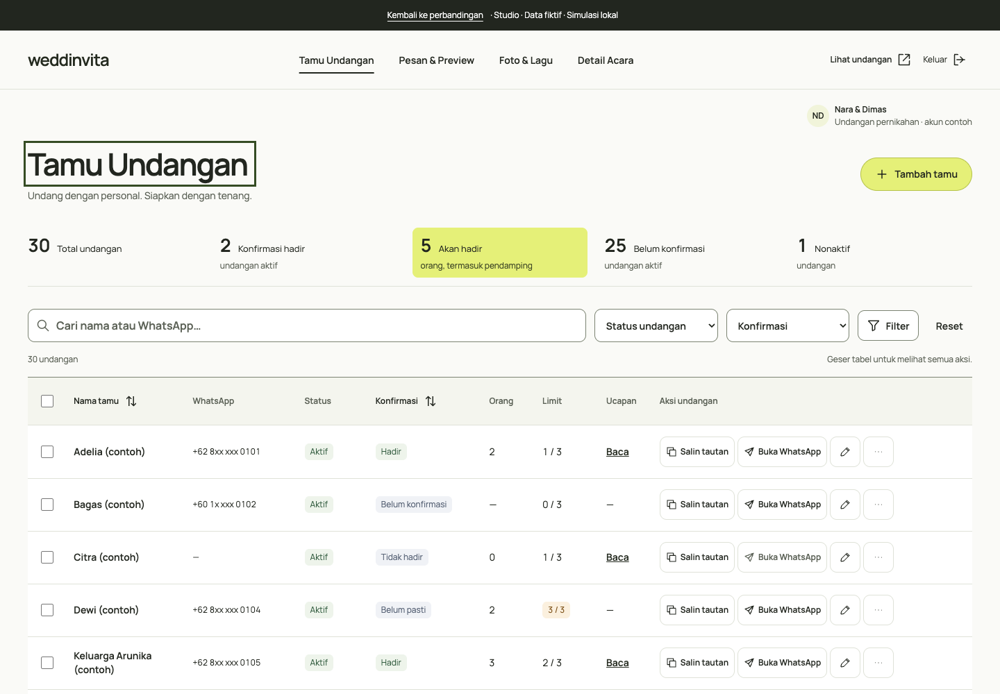
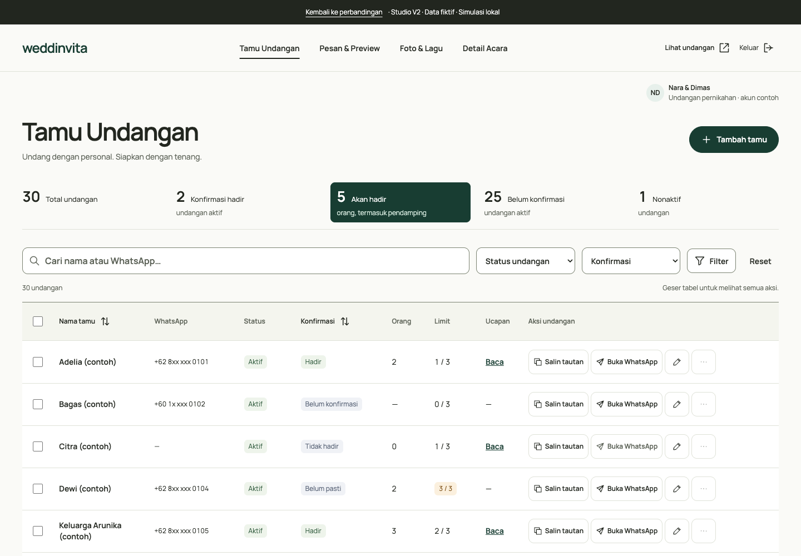

Studio
Terang, segar, dan ekspresif.

Aksen sitrus menandai tindakan utama, jumlah orang hadir, dan bagian acara yang dipilih.
- Aksen utama
- #E5F078 · Teks tinta
- Karakter
- Segar dan optimistis, dengan penekanan visual yang lebih cerah.
Layout dan fungsi yang sama. Bandingkan aksen sitrus pada Studio dengan hijau #183D32 dari referensi Anda pada Studio V2.
Detail Acara sudah ditata ulang pada kedua versi · Data fiktif · Simulasi lokal
Terang, segar, dan ekspresif.

Aksen sitrus menandai tindakan utama, jumlah orang hadir, dan bagian acara yang dipilih.
Tenang, hangat, dan berkarakter.

Hijau dari referensi Anda menggantikan aksen sitrus. Teks pada bidang hijau memakai putih agar tetap terbaca.
Lima bagian yang bisa dipilih: Pasangan & keluarga, Acara & waktu, Lokasi, Hadiah, dan Akses undangan. Ringkasan mengikuti isian, nilai tetap ada saat berpindah bagian, dan satu tombol menyimpan seluruh perubahan.
Login, tamu, pesan, media, dan susunan Detail Acara sama pada kedua versi. Warna sukses, peringatan, dan hapus tetap mengikuti maknanya.